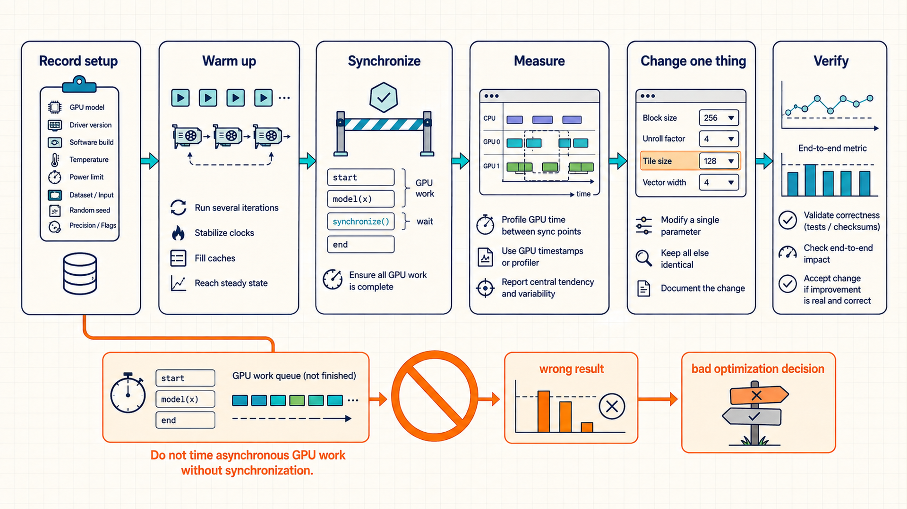

11 Performance Experiments
Turn performance questions into reproducible experiments with controlled inputs, correctness checks, warmup, profiling, and explicit interpretation.
Hands-on performance work is a measurement discipline before it is a collection of code snippets. The same kernel, decode loop, or distributed job can look fast or slow depending on warmup, shape control, synchronization, profiler scope, and whether the run is measuring compilation instead of steady state.
A repeatable lab workflow turns the earlier performance models into measured evidence. Each compact example tests a bottleneck hypothesis rather than presenting standalone syntax.
The workflow moves from experimental controls to broad profiling and roofline classification, then to kernel, compiler, decode, cache, and speculative-decoding probes. Each experiment records what changed, verifies the result, and interprets the measurement at the layer that produced it.
GPU execution is asynchronous with respect to Python, so a host timer can stop before the queued GPU work finishes unless the benchmark synchronizes or uses correctly placed CUDA events.

The main path records the environment and workload, warms up compilation and allocation, synchronizes the timed region, changes one factor, and checks both correctness and the measured metric. The warning path shows why unsynchronized timing can produce a false speedup and a bad engineering decision.
11.1 Controlled benchmark workflow
Before running benchmarks, a standard methodology must be defined to ensure measurements are repeatable, clean, and isolate the intended hardware behaviors from framework startup overhead.
11.1.1 Lab workflow and benchmark hygiene
A lab pass is one complete measurement cycle: define a bottleneck hypothesis, run controlled code, check correctness, collect evidence, and write an engineering conclusion. Benchmark hygiene is the discipline that keeps this cycle from measuring startup cost, shape drift, stale caches, or incorrect output instead of the intended performance question.
A useful lab pass has a fixed order. The order matters because later steps are meaningless if the earlier assumptions are unstable.
- Hypothesis: Name the bottleneck or mechanism being tested before collecting traces.
- Environment: Record hardware, driver, CUDA runtime, PyTorch, Triton kernel-language/compiler, relevant attention, quantization, or communication backend versions, and serving-engine versions.
- Warmup: Separate first-run compilation, autotuning, allocator initialization, and cache setup from steady-state timing.
- Shape control: Use tensor dimensions drawn from the expected workload and keep them stable unless dimension variation is the experiment.
- Correctness: Check outputs, cache updates, gradients, or rank participation before trusting speed numbers.
- Measurement: Synchronize appropriately and collect only the evidence needed for the hypothesis.
- Read the result: Connect the measurement to a bottleneck class before changing one variable.
A trace without a hypothesis invites random tuning; a benchmark without correctness can optimize the wrong computation.
- Start with one bottleneck question, such as memory bandwidth, launch overhead, graph breaks, or communication wait.
- Use input dimensions drawn from the real workload; convenient microbenchmark dimensions can hide the production bottleneck.
- Separate setup, first-run compilation, and steady-state timing.
- Use profiler evidence to choose the next tool rather than collecting every metric at once.
A controlled experiment begins with one hypothesis and a stable workload; additional metrics cannot repair an undefined timing boundary or an unchecked result. The next question is which environment facts must be recorded so the result can be reproduced and compared.
11.1.2 Environment and version logging
An environment log is the reproducibility record for a performance result. It identifies the hardware, driver, runtime, framework, kernel backend, serving engine, and distributed launch context that produced the measurement.
- Hardware identity: GPU model, GPU count, memory capacity, interconnect, CPU model, and node shape.
- Driver/runtime identity: NVIDIA driver, CUDA runtime visible to PyTorch, cuDNN or attention backend versions when relevant.
- Framework identity: Python, PyTorch, Triton kernel-language/compiler, Transformers, serving engine, and distributed framework versions.
- Execution mode: Whether the run used eager execution,
torch.compile, CUDA Graphs, quantization, custom kernels, or a serving-engine backend.
Record Python, PyTorch, CUDA runtime, NVIDIA driver, GPU model, Triton kernel-language/compiler version, attention backend, serving engine version, and distributed launch configuration. Kernel availability, compiler behavior, quantized paths, and NCCL topology choices all depend on these versions. The following starter logger records common fields and makes missing optional packages explicit; extend it with model, driver, topology, container, and benchmark-specific settings used by the experiment.
Code example: Code example
import importlib.metadata
import os
import platform
import subprocess
import sys
import torch
def package_version(name):
try:
return importlib.metadata.version(name)
except importlib.metadata.PackageNotFoundError:
return "not installed"
print(f"Python: {sys.version.split()[0]}")
print(f"OS: {platform.platform()}")
print(f"PyTorch: {torch.__version__}")
print(f"CUDA runtime reported by PyTorch: {torch.version.cuda}")
print(f"cuDNN: {torch.backends.cudnn.version()}")
print(f"CUDA available: {torch.cuda.is_available()}")
if torch.cuda.is_available():
props = torch.cuda.get_device_properties(0)
print(f"GPU: {props.name}; memory={props.total_memory / 2**30:.1f} GiB")
for package in ("triton", "transformers", "flash-attn", "xformers", "vllm", "deepspeed"):
print(f"{package}: {package_version(package)}")
for name in ("CUDA_VISIBLE_DEVICES", "RANK", "LOCAL_RANK", "WORLD_SIZE", "NCCL_SOCKET_IFNAME"):
print(f"{name}={os.environ.get(name, '<unset>')}")
try:
driver = subprocess.run(
["nvidia-smi", "--query-gpu=driver_version", "--format=csv,noheader"],
check=True, capture_output=True, text=True,
).stdout.splitlines()[0]
except (FileNotFoundError, subprocess.CalledProcessError, IndexError):
driver = "unavailable"
print(f"NVIDIA driver: {driver}")The logger distinguishes the CUDA runtime bundled or reported by PyTorch from the installed NVIDIA driver. Package versions establish which compiler, attention, serving, and distributed paths were available; environment variables record device visibility and rank placement. A final experiment record should also include model revision, input-shape distribution, precision, compiler mode, cache settings, launch command, and the profiler or timing method.
11.1.3 Warmup policy and shape control
Warmup is the deliberate execution of unmeasured iterations before timing begins. It initializes kernels, allocator state, autotuning, graph compilation, and serving-engine caches so the measurement reflects steady-state behavior rather than first-run setup.
Shape control means deciding which tensor dimensions are allowed during a benchmark: batch size, sequence length, hidden size, head dimension, and the mix of prefill and decode tokens. It matters because torch.compile, CUDA Graphs, attention kernels, and serving schedulers often specialize to dimension ranges. If production sequence lengths vary, benchmark their actual distribution.
- Warmup count: Enough unmeasured iterations to trigger compilation, autotuning, allocator growth, and cache creation.
- Static-shape experiment: Keeps shapes fixed to isolate kernel, compiler, or CUDA Graph behavior.
- Variable-shape experiment: Uses a controlled distribution of lengths or batch shapes to test scheduler and compiler behavior under realistic variability.
- Shape drift: An accidental change in tensor dimensions between runs, often causing recompilation or different kernel selection.
Warmup removes one-time setup from steady-state timing, while deliberate shape control determines whether recompilation and kernel changes belong to the experiment. The next question is whether the candidate path still computes the intended result across that chosen shape range.
11.1.4 Correctness checks
A correctness check verifies that the optimized path still computes the intended result. Performance numbers are not useful if a kernel silently drops work, a decode loop corrupts the cache, or a distributed job leaves some ranks out of the computation.
- Custom kernel: Compare against a PyTorch reference within the expected floating-point tolerance.
- Decode path: Confirm generated shapes, appended tokens, and key-value cache updates.
- Distributed job: Verify all ranks participate, gradients update, and cleanup runs even after an exception.
Use torch.allclose for a simple floating-point comparison when an optimized tensor output should match an eager reference:
Code example: Code example
import torch
# Verify optimized output matches eager reference within tolerance
assert torch.allclose(optimized_output, eager_reference, rtol=1e-3, atol=1e-3), \
f"Mismatch! Max absolute difference: {(optimized_output - eager_reference).abs().max()}"Tolerance is part of the correctness contract. A fused or lower-precision path may differ bit-for-bit from a reference path, so the allowed error must be chosen before timing and before any surprising speedup appears.
For serving experiments, correctness also includes sequence-level behavior: the cache should grow as expected, finished requests should stop advancing, and batching should not change the requested decoding constraints.
11.1.5 Benchmark harness structure
A benchmark harness is the wrapper code that prepares inputs, runs warmup, measures the intended region, checks correctness, and reports results. Its job is to make the measurement reproducible and to keep setup or teardown work out of the timing window.
A small harness should separate responsibilities instead of hiding them inside one timing block:
- Setup: Allocate inputs, construct the model or engine, and choose the device.
- Warmup: Run enough iterations to initialize kernels, compilation paths, caches, and allocator state.
- Measurement: Time only the region that answers the bottleneck question.
- Synchronization: Use
torch.cuda.synchronize()before and after measured CUDA work when wall-clock timing is required. - Reporting: For serving experiments, report both latency and throughput because a scheduler can improve one while harming the other.
CUDA events measure elapsed work between two points on a CUDA stream. They exclude most host dispatch, Python scheduling, and request-queue time, so they are appropriate for device-stream timing rather than end-to-end latency:
Code example: Code example
import torch
# 1. Warmup
for _ in range(warmup_steps):
_ = model(inputs)
torch.cuda.synchronize()
# 2. Synchronized timing loop
start_event = torch.cuda.Event(enable_timing=True)
end_event = torch.cuda.Event(enable_timing=True)
start_event.record()
for _ in range(num_steps):
_ = model(inputs)
end_event.record()
torch.cuda.synchronize()
elapsed_ms = start_event.elapsed_time(end_event)
print(f"Average step latency: {elapsed_ms / num_steps:.2f} ms")Use the event result to compare completed GPU work on the measured stream. When the question is end-to-end latency, pair it with a synchronized wall-clock measurement that includes host dispatch, scheduling, copies, and any waits outside the stream interval.
11.1.6 Profiler selection guide
Profiler selection is a layer-selection decision. Choose the tool that sees the layer where the hypothesis lives instead of collecting every trace format at once.
- PyTorch Profiler: Use when the question is which framework operation, tensor shape, memory allocation, or phase is expensive.
- Nsight Systems: Use when the question is timeline structure: CPU launch gaps, memory copies, CUDA synchronization, NVTX ranges, or collectives.
- Nsight Compute: Use after one kernel is identified and the question becomes occupancy, memory transactions, instruction mix, or achieved bandwidth.
- Perfetto: Use it for interactive inspection of exported Chrome traces. Use Nsight Systems for system-wide CUDA timelines and Nsight Compute for kernel-level hardware metrics.
When inspecting a trace, look for CPU-side tokenization, API work, GPU idle gaps, many tiny kernels, memory copies, synchronization points, and the separation between long prefill regions and repeated decode steps.
11.1.7 Interpretation template
Reading results means connecting the measurement to a bottleneck class. A useful result note contains five parts:
- Measured result: What the profiler, benchmark, or trace actually showed.
- Likely bound: Memory-bound, compute-bound, launch-bound, communication-bound, or scheduler-bound.
- Supporting evidence: The counter, trace region, timeline gap, or formula that supports the suspected cause.
- Next change: The smallest change that should move the identified bottleneck.
- Other cause checked: The other plausible cause considered and the evidence that points elsewhere.
This keeps profiler tables from becoming isolated numbers. A good result note states what happened, what should change next, and what evidence would disprove that next step.
The template should be filled immediately after the run while the trace, command line, and environment log are still available. Otherwise the result becomes difficult to compare with the next experiment.
11.1.8 Reliable measurement
Reliable GPU measurement matches the timing method to the question being asked. The following conditions keep Python timing, asynchronous CUDA execution, first-run compilation, shape variation, and scheduler effects from changing the measured quantity.
- Synchronize around wall-clock GPU timing when the metric is device execution time.
- Measure first-run compilation or autotuning separately from steady-state latency.
- Freeze tensor shapes when comparing one change, or report shape variation as an independent factor.
- Use sizes from the expected workload that expose the target memory pressure or communication overhead.
- Report the serving-latency distribution, including tail latency, when the service target depends on it.
- Confirm copy, communication, and compute overlap from a timeline and stream dependencies.
The repair is usually simple: synchronize around wall-clock GPU timing, separate warmup from steady-state measurement, freeze or deliberately vary shapes, and report the latency distribution that matches the service target.
11.1.9 Runtime setup and launch configuration
Runtime setup is the set of process-level choices that change how the benchmark executes. The environment log records what system produced a result; runtime setup controls which devices are visible, how memory allocation behaves, which distributed launcher creates ranks, and which diagnostics are enabled.
Set these controls deliberately before timing begins. A benchmark launched with different visible GPUs, allocator policy, NCCL interface, or distributed rank mapping is a different experiment even if the Python model code is identical.
torchrun is the usual launch tool for PyTorch distributed jobs. It creates one or more processes and sets rank-related environment variables such as RANK, WORLD_SIZE, and LOCAL_RANK. For diagnosis, NCCL_DEBUG=INFO can expose selected transports and topology decisions.
CUDA_VISIBLE_DEVICEScontrols which GPUs the process can see and how they are enumerated.PYTORCH_CUDA_ALLOC_CONFchanges caching allocator behavior and is useful when fragmentation is suspected.NCCL_DEBUG=INFOprints NCCL initialization and communication diagnostics.NCCL_SOCKET_IFNAMEselects the network interface for socket-based NCCL paths.NCCL_IB_DISABLEcan disable InfiniBand paths for diagnosis or force fallback behavior.NCCL_P2P_DISABLEcan disable peer-to-peer GPU communication for diagnosis.
Runtime variables and launch tools define the visible devices, allocator, rank mapping, and transport path, so changing them creates a different experiment even when model code is unchanged. The next question is how to apply the same controlled sequence to recurring roofline, decode, compilation, and communication tests.
11.1.10 Recurring experiment patterns
Several experiment shapes recur across performance work. They differ in the measured object, but they share the same discipline: establish a baseline, change one mechanism, verify the output, and explain the result using evidence from the appropriate software and hardware layer.
- Roofline exercise pattern: Count FLOPs, estimate HBM bytes, measure steady-state time, compute arithmetic intensity, compare against bandwidth and compute ceilings, then explain any contradiction.
- Decode optimization pattern: Separate prefill from repeated decode, validate KV-cache updates, measure per-token latency, then test whether the next bottleneck is memory bandwidth, launch overhead, or scheduler gaps.
- Compile and CUDA Graph pattern: Run warmup, identify graph breaks, stabilize shapes and memory addresses, capture only steady GPU work, replay, and compare against eager execution without including compile time.
- Speculative workshop pattern: Track draft tokens, target verification, accepted/rejected spans, acceptance rate, gamma, c, and wall time together. Do not report acceptance without wall-clock evidence.
- Interpretation discipline: Treat working code as evidence only after its assumptions, timing boundary, and correctness check are explicit. The point is to explain why each measurement step exists.
A good lab write-up therefore ends with an engineering conclusion: which resource bounded the run, what evidence supports that conclusion, what change should move the bound, and which tempting change is unlikely to help.
11.2 Performance probes and checks
Each code template provides a self-contained pattern designed to isolate a specific runtime behavior or measurement workflow. These recipes demonstrate concrete kernel invocations, profiling hooks, and memory accounting patterns before production validation is added.
Use the templates as controlled probes. Before adapting one, identify the bottleneck question it answers, the input shapes it assumes, and the correctness check that proves the optimized path still computes the intended result.
11.2.1 PyTorch profiling template
Profile PyTorch code before changing it so the hot operations are known. PyTorch’s native profiler uses a context manager to trace host CPU thread execution, CUDA API dispatch, and GPU kernel execution timelines.
Example: PyTorch profiling template. This profile records several steady-state iterations after an explicit wait and warmup schedule. The aggregate table identifies expensive framework operations; the trace supplies the timing relationships needed to distinguish kernel time from launch gaps, copies, and synchronization.
Code example: PyTorch profiling template
# What this code shows:
# - Sort by CUDA time to identify expensive operators, but do not treat aggregate operator time
# alone as proof of a hardware bottleneck.
# - Inspect the exported timeline to distinguish CPU dispatch, launch gaps, copies,
# synchronization, and GPU execution.
# - Use recorded shapes to connect slow operations to batch, sequence, or hidden dimensions.
# - The profile context manager should surround only the core logic being investigated, excluding
# setup or final logs.
#
import torch
from torch.profiler import ProfilerActivity, profile, schedule
device = torch.device("cuda", 0)
args = (torch.randn(1024, 1024, device=device),)
def fn(x):
return torch.relu(x @ x)
for _ in range(5):
fn(*args)
with profile(
activities=[ProfilerActivity.CPU, ProfilerActivity.CUDA],
schedule=schedule(wait=1, warmup=1, active=3, repeat=1),
record_shapes=True,
profile_memory=True,
on_trace_ready=torch.profiler.tensorboard_trace_handler("./traces"),
) as prof:
for _ in range(5):
fn(*args)
prof.step()
print(prof.key_averages().table(sort_by="cuda_time_total", row_limit=20))The table ranks framework operations within the selected profiling window. A large CUDA total points to where device time accumulates, while the timeline shows whether that time comes from long kernels, repeated short launches, copies, synchronization, or idle gaps. Memory coalescing cannot be diagnosed from a CPU-to-GPU gap; it requires kernel-level memory-transaction evidence.
While the PyTorch Profiler is excellent for operator-level breakdowns, Nsight Systems and Perfetto provide a system-level timeline view. Nsight Systems captures CPU schedule states, GPU kernel execution timelines, memory copies, and distributed NCCL synchronization events, while Perfetto is the standard visual viewer for interactive inspection.
11.2.2 Timeline tracing
Operator totals identify expensive framework calls, but they do not show whether delay occurs in host scheduling, CUDA submission, memory copies, device kernels, or communication. A system timeline preserves that ordering; the two workflows below capture it through Nsight Systems or export it for Perfetto.
Example: Nsight Systems capture. This command records a system-level timeline around the real training or serving entry point. The output report correlates operating-system scheduling, CUDA API calls, library calls, kernels, memory copies, and NVTX ranges.
Code example: Nsight Systems capture
# What this code shows:
# - Look for gaps between kernels on the GPU timeline to identify CPU dispatch delays.
# - Check whether CPU launches, memory copies, or distributed collectives dominate the overall
# timeline.
# - Use NVTX ranges (via torch.cuda.nvtx.range_push/pop) to connect timeline regions to
# application-level phases.
#
nsys profile --trace=cuda,nvtx,osrt,cublas,cudnn \
--sample=none \
-o run_trace python train_or_serve.pyExample: PyTorch trace export for Perfetto. This second path exports a Chrome-trace JSON from a complete PyTorch Profiler schedule. Perfetto can then inspect the CPU and CUDA lanes in a browser without changing the measurement boundary used by the profiler.
Code example: PyTorch trace export for Perfetto
# What this code shows:
# - The profiler schedule keeps startup and warmup outside the active trace window.
# - Each prof.step() advances the schedule by one application iteration.
# - Use the trace to relate Python work, CUDA launches, kernels, copies, and idle intervals.
#
import torch
from torch.profiler import ProfilerActivity, profile, schedule
with profile(
activities=[ProfilerActivity.CPU, ProfilerActivity.CUDA],
schedule=schedule(wait=1, warmup=1, active=3, repeat=1),
on_trace_ready=lambda p: p.export_chrome_trace("trace.json"),
) as prof:
for _ in range(5):
train_or_serve_step()
prof.step()
# Open trace.json in https://ui.perfetto.dev.Empty GPU intervals show that no GPU work was executing, but the timeline must identify why. Possible causes include CPU dispatch, compilation, input starvation, a synchronization dependency, communication, memory allocation, or intentional waiting. The surrounding CPU, CUDA API, copy, and collective lanes provide the distinguishing evidence.
To apply the Roofline Model to a measured GPU execution, we must calculate the workload’s Arithmetic Intensity (AI, FLOPs per byte moved) and compare its achieved throughput against the hardware’s peak ceilings. This calculation determines whether a kernel is memory-bandwidth-bound or compute-bound, pointing directly to the correct optimization strategy (e.g., memory coalescing vs. instruction-level parallelism).
11.2.3 11.2.3 Roofline calculation template
This Python example turns a measured kernel into a roofline point. It includes sample numbers so the output can be interpreted immediately.
Code example: 11.2.3 Roofline calculation template
# What this code shows:
# - Arithmetic intensity controls the HBM bandwidth ceiling: below the hardware ridge point, that
# ceiling is lower than the selected compute ceiling.
# - The model uses min(peak_tflops, memory_ceiling) to find the absolute physical ceiling at this
# arithmetic intensity.
# - A contradiction between measured throughput and the predicted roofline bound (such as achieved
# exceeding the bound) usually indicates that the FLOP count was overestimated or the byte count
# was underestimated (e.g., due to cache hits).
# - If achieved performance is significantly below the calculated bound, inspect launch overhead,
# occupancy, dependencies, instruction mix, and whether the FLOP and byte counts use the same
# measurement boundary.
#
def roofline(flops, bytes_moved, seconds, peak_tflops, peak_tb_s):
ai = flops / bytes_moved
achieved = flops / seconds / 1e12
memory_ceiling = ai * peak_tb_s
bound = min(peak_tflops, memory_ceiling)
bound_type = "memory-bound" if memory_ceiling < peak_tflops else "compute-bound"
return ai, achieved, bound, bound_type
ai, achieved, bound, bound_type = roofline(
flops=2e12,
bytes_moved=1e12,
seconds=0.500,
peak_tflops=200,
peak_tb_s=3,
)
print(f"AI={ai:.1f} FLOPs/byte, achieved={achieved:.1f} TFLOP/s")
print(f"roofline_bound={bound:.1f} TFLOP/s, bound_type={bound_type}")With the sample inputs, arithmetic intensity is 2 FLOPs per byte, the HBM ceiling is 6 TFLOP/s, and achieved throughput is 4 TFLOP/s. The point is below the memory roof and cannot yet be called bandwidth-saturated. A trace and kernel counters are needed to determine whether launch overhead, occupancy, access efficiency, or another dependency explains the remaining gap.
For a memory-sensitive linear layer, such as a small-batch decode projection, eager execution can expose dispatch cost or separate intermediate operations around the matrix-vector product. A custom Triton GEMV kernel makes the tile mapping explicit: it loads matrix and vector elements into program values, accumulates partial dot products, and writes only the output vector. Whether the compiler uses registers, shared memory, or cache for a particular value must be confirmed from generated code and profiler evidence.
This template is a controlled proxy for optimizing a small, regular, bandwidth-sensitive matrix-vector operation. Use it when profiler evidence shows a layout or fusion opportunity beyond the selected vendor or compiler-generated path.
11.2.4 11.2.4 Triton GEMV kernel
This Triton matrix-vector multiplication probe shows program IDs, tile offsets, masked loads, reductions, and stores. It checks the result against PyTorch before timing several tile sizes, because a launch configuration is not an optimization until it is both correct and faster for the measured shape.
Code example: 11.2.4 Triton GEMV kernel
# What this code shows:
# - The launch grid determines how many rows are computed in parallel (one program per row).
# - The mask handles boundary columns, preventing out-of-bounds memory accesses.
# - The reduction happens inside the program tile using tl.sum on SRAM buffers.
# - BLOCK is a compile-time tile size. It changes loop count and resource use, so test several
# values instead of inferring the fastest value from cache-line size alone.
#
import torch
import triton
import triton.language as tl
@triton.jit
def gemv_kernel(A, x, y, M: tl.constexpr, N: tl.constexpr, BLOCK: tl.constexpr):
row = tl.program_id(0)
offsets = tl.arange(0, BLOCK)
acc = tl.full((), 0.0, tl.float32)
for start in range(0, N, BLOCK):
cols = start + offsets
mask = cols < N
acc += tl.sum(tl.load(A + row * N + cols, mask=mask, other=0.0)
* tl.load(x + cols, mask=mask, other=0.0), axis=0)
tl.store(y + row, acc)
M, N = 4096, 4096
A = torch.randn((M, N), device="cuda", dtype=torch.float16)
x = torch.randn((N,), device="cuda", dtype=torch.float16)
y = torch.empty((M,), device="cuda", dtype=torch.float32)
gemv_kernel[(M,)](A, x, y, M, N, BLOCK=1024)
reference = A.float() @ x.float()
torch.testing.assert_close(y, reference, rtol=1e-2, atol=1e-2)
for block in (256, 512, 1024):
ms = triton.testing.do_bench(
lambda block=block: gemv_kernel[(M,)](A, x, y, M, N, BLOCK=block)
)
print(f"BLOCK={block}: {ms:.3f} ms")Definition - Code-to-object mapping
A: The matrix with shape M by N. In a decode-like projection, this stands for a large weight matrix read from GPU memory.
x: The vector with length N. This stands for one token representation or a small batch slice.
row: The Triton program id. One program computes one output coordinate y[row].
offsets and mask: The tile-local column indices and boundary guard. They define which elements of A[row, :] and x are read in each loop chunk.
acc: The running dot-product accumulator for y[row], kept in registers or fast local storage before the final store.
This kernel is a controlled row-wise baseline, not a claim that custom Triton always beats the selected library or compiler path. Use Nsight Compute to inspect memory transactions, achieved bandwidth, occupancy, and register pressure for the fastest correct configuration, then compare it with the production operator on the same shape and dtype.
A naive attention implementation materializes score and probability tensors whose element count grows with the square of sequence length. FlashAttention-style kernels tile the computation and maintain the softmax statistics online, avoiding those full intermediates in HBM. The benefit depends on the supported backend, shape, dtype, mask, and hardware, so the experiment must confirm the selected path, compare outputs, and measure both time and peak allocated memory.
11.2.5 11.2.5 Attention backend comparison
This forward-pass probe compares explicit attention with PyTorch scaled dot-product attention while requesting the FlashAttention backend. It validates outputs and reports event time plus additional peak allocated memory. Run it only on a CUDA configuration that supports the requested backend; otherwise record the fallback or unsupported result instead of attributing it to FlashAttention.
Code example: 11.2.5 Attention backend comparison
# What this code shows:
# - Naive attention materializes an [S, S] matrix per batch and head, consuming memory
# proportional to B × H × S².
# - For S=2048, the naive matrix requires 4 * 32 * 2048 * 2048 * 2 bytes = 1.07 GB in FP16.
# - The backend context requests FlashAttention rather than silently assuming which scaled-dot-
# product implementation was selected.
# - This probe measures inference-style forward execution only. Training requires a separate
# forward-plus-backward comparison and gradient checks.
#
import gc
import torch
import torch.nn.functional as F
from torch.nn.attention import SDPBackend, sdpa_kernel
# Shapes: Batch, Heads, Sequence Length, Head Dimension
B, H, S, D = 4, 32, 2048, 128
q = torch.randn(B, H, S, D, device="cuda", dtype=torch.float16)
k = torch.randn(B, H, S, D, device="cuda", dtype=torch.float16)
v = torch.randn(B, H, S, D, device="cuda", dtype=torch.float16)
# 1. Naive Attention (explicit O(S squared) intermediate matrix)
def naive_attention(q, k, v):
scale = 1.0 / (q.shape[-1] ** 0.5)
attn_weights = torch.matmul(q, k.transpose(-2, -1)) * scale
attn_probs = F.softmax(attn_weights, dim=-1)
return torch.matmul(attn_probs, v)
# 2. Optimized scaled-dot-product attention backend
def optimized_attention(q, k, v):
with sdpa_kernel(SDPBackend.FLASH_ATTENTION):
return F.scaled_dot_product_attention(q, k, v)
@torch.inference_mode()
def measure(fn, repeats=10):
gc.collect()
torch.cuda.empty_cache()
for _ in range(3):
out = fn(q, k, v)
torch.cuda.synchronize()
baseline = torch.cuda.memory_allocated()
torch.cuda.reset_peak_memory_stats()
start = torch.cuda.Event(enable_timing=True)
stop = torch.cuda.Event(enable_timing=True)
start.record()
for _ in range(repeats):
out = fn(q, k, v)
stop.record()
torch.cuda.synchronize()
extra_peak = torch.cuda.max_memory_allocated() - baseline
return out, start.elapsed_time(stop) / repeats, extra_peak
naive_out, naive_ms, naive_peak = measure(naive_attention)
flash_out, flash_ms, flash_peak = measure(optimized_attention)
torch.testing.assert_close(flash_out, naive_out, rtol=2e-2, atol=2e-2)
print(f"naive: {naive_ms:.3f} ms, extra peak {naive_peak / 2**20:.1f} MiB")
print(f"flash: {flash_ms:.3f} ms, extra peak {flash_peak / 2**20:.1f} MiB")Definition - Code-to-object mapping
q, k, v: Query, key, and value tensors with shape B by H by S by D.
attn_weights: The explicit B by H by S by S score tensor in the naive implementation. This is the object FlashAttention avoids materializing in HBM.
attn_probs: The normalized score tensor after softmax. In the naive path it is another large intermediate; in the tiled path its effect is computed online.
F.scaled_dot_product_attention: The PyTorch API call that may dispatch to a FlashAttention-style backend when dtype, device, mask, and shape constraints are compatible.
The explicit score matrix alone contains B times H times S squared elements, but the measured peak also depends on allocator reuse, outputs, temporary workspaces, and backend implementation. Repeat the experiment over representative sequence lengths and report unsupported shapes or fallbacks; do not generalize one successful configuration to every attention workload.
A healthy torch.compile region keeps data-dependent decisions in tensor operations that the compiler can trace. This example establishes that normal form first, then contrasts a host-side scalar branch that forces eager fallback.
The small branch isolates one boundary. In larger serving or training code, the same boundary appears as logging, shape-dependent Python decisions, sampling logic placed inside the model step, or scalar diagnostics mixed into the hot tensor path.
11.2.6 11.2.6 Inspecting a torch.compile boundary
This example contrasts a tensor-valued selection with a Python branch driven by a CUDA scalar. Both functions are compiled and executed so graph-break diagnostics can report the behavior of the installed PyTorch configuration.
Code example: 11.2.6 Inspecting a torch.compile boundary
# What this code shows:
# - torch.where keeps the selection in tensor space, which is generally easier to capture than a
# Python branch.
# - host_branch extracts a CUDA scalar to the host. That synchronization commonly causes a graph
# break unless a configuration or capture feature handles the scalar path.
# - Compilation should be validated with graph-break diagnostics (TORCH_LOGS='graph_breaks') and
# timing.
# - Graph breaks fragment compile regions, leading to launch gaps and intermediate storage
# overhead.
#
import torch
# Normal compiled path: condition remains a GPU tensor
def compiled_step(x):
return torch.where(x.sum() > 0, x * 2, x - 2)
compiled = torch.compile(compiled_step, mode="reduce-overhead")
x = torch.randn(1024, device="cuda")
y = compiled(x)
# Host-control variation: .item() returns a Python scalar.
def host_branch(x):
return x * 2 if x.sum().item() > 0 else x - 2
compiled_host_branch = torch.compile(host_branch)
z = compiled_host_branch(x)Run the code with TORCH_LOGS='graph_breaks,recompiles' or the current PyTorch diagnostic interface. The result to record is not an assumed break count but the observed captured regions, fallbacks, recompilations, and steady-state time for the installed version and input shapes.
For small-batch inference workloads, CPU dispatch and kernel launch overhead can occupy a meaningful share of execution time. CUDA Graphs record a stable sequence of GPU operations and submit it through one graph replay, reducing repeated host launch work without fusing or accelerating the recorded kernels themselves.
11.2.7 11.2.7 CUDA Graph warmup and replay
This inference-mode pattern warms the module on a side stream, synchronizes before capture, records stable-address work, and explains the lifetime of the captured output buffer. Use it only after profiling shows launch overhead and the shapes and addresses can remain stable.
Code example: 11.2.7 CUDA Graph warmup and replay
# What this code shows:
# - Side-stream warmup initializes kernels, libraries, and allocator state before capture and
# establishes explicit stream dependencies.
# - Static buffers keep memory addresses stable, which is a requirement for CUDA Graph recording.
# - Replay reduces CPU launch overhead, not the work done by each kernel.
# - The returned static_out aliases captured storage and is overwritten by the next replay. Clone
# it only when a caller must retain a snapshot.
#
import torch
device = torch.device("cuda", 0)
module = torch.nn.Linear(1024, 1024).to(device).eval()
example = torch.randn(32, 1024, device=device)
graph = torch.cuda.CUDAGraph()
static_in = torch.empty_like(example)
warmup_stream = torch.cuda.Stream()
with torch.inference_mode():
warmup_stream.wait_stream(torch.cuda.current_stream())
with torch.cuda.stream(warmup_stream):
for _ in range(3):
_ = module(static_in)
torch.cuda.current_stream().wait_stream(warmup_stream)
torch.cuda.synchronize()
with torch.cuda.graph(graph):
static_out = module(static_in)
@torch.inference_mode()
def replay(x, *, keep_snapshot=False):
static_in.copy_(x)
graph.replay()
return static_out.clone() if keep_snapshot else static_outCapture safety is workload-specific: lazy initialization, unsupported operations, dynamic allocations, changing shapes, or cross-stream dependencies can make a sequence unsafe. Compare replay with a warmed eager or compiled baseline, and keep compilation time separate from steady-state replay time.
Autoregressive decode generates tokens sequentially. Without a key-value cache, a simple implementation can rerun the full growing prefix; with a cache, later calls compute projections for the new token while attention still reads stored keys and values from the preceding context. The following probe exposes that state transition and returns the generated tokens so its behavior can be checked.
11.2.8 11.2.8 Cached decode state
This PyTorch pattern shows how cache reuse changes the model-call inputs. The first call processes the prompt and creates the cache; later calls pass one newly selected token plus the accumulated cache. It demonstrates state flow, not a complete serving scheduler or sampler.
Code example: 11.2.8 Cached decode state
# What this code shows:
# - The repeated step is serial per sequence, representing the decode phase.
# - The key-value cache prevents prefix recomputation. Later steps process one new query token,
# but they still read cached keys and values whose length grows with the context.
# - After prefix recomputation is removed, weight traffic, growing KV reads, launch overhead, or
# scheduler gaps may become the next visible limit.
# - The past_key_values object accumulates key and value tensors across layers.
#
import torch
@torch.inference_mode()
def cached_decode(model, input_ids, max_new_tokens, eos_token_id=None):
if max_new_tokens <= 0:
return input_ids[:, :0]
out = model(input_ids, use_cache=True)
past = out.past_key_values
token = out.logits[:, -1].argmax(dim=-1, keepdim=True)
generated = [token]
for _ in range(max_new_tokens - 1):
if eos_token_id is not None and torch.all(token == eos_token_id):
break
out = model(token, past_key_values=past, use_cache=True)
past = out.past_key_values
token = out.logits[:, -1].argmax(dim=-1, keepdim=True)
generated.append(token)
return torch.cat(generated, dim=1)Definition - State trace
Prefill call: model(input_ids, use_cache=True) processes the prompt and returns the initial cache for all layers.
past: The persistent decode state. Its token dimension grows as generation proceeds, so cache reads still scale with context length.
token: A one-token tensor fed to later model calls. The compute for new Q/K/V is small, but attention reads the stored K/V history.
Updated cache: Each iteration appends one new key and value per layer. Serving engines optimize where those appended blocks live and how kernels read them.
Preserving key-value states shifts the decode workload from recomputing the whole prefix toward reading and extending stored attention state. In this case, optimization must focus on cache capacity, layout, transfer bandwidth, and launch overhead rather than treating decode as constant-cost arithmetic.
KV-cache bytes are one major dynamic component of decode memory, but they are not the whole serving budget. The lower-bound calculator below estimates packed scalar storage before block metadata, scale tensors, padding, fragmentation, allocator reserves, and temporary workspaces.
11.2.9 11.2.9 Key-value cache lower-bound calculator
This Python calculator estimates raw packed KV storage from batch size, stored sequence length, layer count, key-value heads, head dimension, and bits per element. It reports binary GiB and deliberately keeps storage-format overhead outside the formula.
Code example: 11.2.9 Key-value cache lower-bound calculator
# What this code shows:
# - The multiplier 2 accounts for both key and value states.
# - GQA reduces the number of key-value heads compared to query heads, shrinking cache size.
# - This calculation is a lower bound and excludes allocator fragmentation, sequence padding,
# block tables, workspaces, and quantization metadata.
# - Sub-byte formats require packing. Their real storage also includes packing granularity,
# scales, zero points, and alignment where the implementation uses them.
#
def estimate_kv_cache_gib(batch_size, seq_len, layers, kv_heads, head_dim, bits_per_element=16):
# 2 for separate Key and Value states
elements_per_token = layers * kv_heads * head_dim * 2
total_elements = batch_size * seq_len * elements_per_token
total_bytes = total_elements * bits_per_element / 8
return total_bytes / (1024 ** 3)
gib = estimate_kv_cache_gib(
batch_size=32,
seq_len=4096,
layers=32,
kv_heads=8, # Grouped-Query Attention (GQA)
head_dim=128,
bits_per_element=16, # FP16/BF16 scalar payload
)
print(f"Raw packed KV payload: {gib:.2f} GiB")Definition - Code-to-formula mapping
batch_size: B, the number of active sequences admitted by the scheduler.
seq_len: S, the number of stored prompt plus generated tokens per sequence.
layers: L, the number of transformer layers that keep KV state.
kv_heads and head_dim: The key-value head count and per-head dimension in the KV-cache formula.
bits_per_element: The nominal packed payload width of each cached scalar. It is not a complete quantized-storage model.
gib: The raw KV-cache payload converted to GiB; it excludes block metadata, scales, padding, fragmentation, and temporary workspaces.
This memory estimate is a lower bound, representing only the raw token data. In practice, serving engines allocate additional padding for page tables, intermediate workspaces, and allocator fragmentation.
A correct speculative step must do more than count accepted draft tokens. It must use the target-to-draft probability ratio for each proposal, sample from the normalized positive residual after a rejection, or sample one extra target token when every proposal is accepted. The compact implementation below demonstrates that distribution-preserving decision for one sequence without KV-cache optimization.
11.2.10 11.2.10 Distribution-correct speculative step
This pedagogical implementation drafts k tokens, verifies them in one target-model pass, applies the standard acceptance rule, and commits either a residual-sampled correction or one additional target token. It deliberately recomputes model state and uses host-visible decisions, so it is a correctness reference rather than a production speed implementation.
Code example: 11.2.10 Distribution-correct speculative step
# What this code shows:
# - The target and draft tokenizers are compared by token-to-ID mapping and special-token policy;
# equal vocabulary size alone is not evidence of compatibility. Production code should also pin
# and compare the complete tokenizer configuration.
# - draft_probs preserves the draft distribution q(x) from the step that proposed each token; p is
# the corresponding target distribution.
# - The acceptance rule compares the proposed token's target probability with its draft
# probability and caps the acceptance probability at one.
# - After the first rejection, the replacement is sampled from normalized max(0, p - q), and the
# rejected suffix is discarded.
# - When all k proposals are accepted, one additional token is sampled from the target
# distribution after the candidate suffix.
# - The .item() call transfers a scalar decision to the host; production decode paths vectorize
# decisions and repair KV-cache state on the device.
# - Acceptance rate and wall time must be measured together.
# - Use a text sample from the expected domain, such as a FineWeb-like public-web sample, because
# acceptance depends on the workload distribution.
#
import time
import torch
from transformers import AutoTokenizer, AutoModelForCausalLM
device = torch.device("cuda", 0)
target_name = "target-checkpoint"
draft_name = "draft-checkpoint"
tokenizer = AutoTokenizer.from_pretrained(target_name)
draft_tokenizer = AutoTokenizer.from_pretrained(draft_name)
target = AutoModelForCausalLM.from_pretrained(
target_name, torch_dtype=torch.float16
).to(device).eval()
draft = AutoModelForCausalLM.from_pretrained(
draft_name, torch_dtype=torch.float16
).to(device).eval()
if (
tokenizer.get_vocab() != draft_tokenizer.get_vocab()
or tokenizer.special_tokens_map != draft_tokenizer.special_tokens_map
):
raise ValueError("Draft and target require the same token-to-ID mapping")
@torch.inference_mode()
def speculative_step(prompt, k=4):
input_ids = tokenizer(prompt, return_tensors="pt").input_ids.to(device)
prompt_len = input_ids.shape[1]
draft_ids = input_ids
draft_probs = []
torch.cuda.synchronize()
start = time.perf_counter()
for _ in range(k):
q_logits = draft(draft_ids).logits[:, -1]
q_probs = torch.softmax(q_logits, dim=-1)
next_id = torch.multinomial(q_probs, num_samples=1)
draft_probs.append(q_probs)
draft_ids = torch.cat([draft_ids, next_id], dim=1)
target_logits = target(draft_ids).logits
accepted = 0
committed = None
for i, pos in enumerate(range(prompt_len, draft_ids.shape[1])):
token = draft_ids[:, pos]
p = torch.softmax(target_logits[:, pos - 1], dim=-1)
q = draft_probs[i]
ratio = p.gather(1, token[:, None]) / q.gather(1, token[:, None]).clamp_min(1e-12)
accept = (torch.rand_like(ratio) <= torch.clamp(ratio, max=1.0)).item()
if accept:
accepted += 1
else:
residual = torch.clamp(p - q, min=0)
residual_mass = residual.sum(dim=-1, keepdim=True)
residual = torch.where(residual_mass > 0, residual / residual_mass, p)
replacement = torch.multinomial(residual, num_samples=1)
committed = torch.cat([draft_ids[:, :pos], replacement], dim=1)
break
if committed is None:
extra_p = torch.softmax(target_logits[:, -1], dim=-1)
extra_token = torch.multinomial(extra_p, num_samples=1)
committed = torch.cat([draft_ids, extra_token], dim=1)
torch.cuda.synchronize()
wall_ms = (time.perf_counter() - start) * 1000
return committed, accepted, wall_msDefinition - Code-to-object mapping
draft_ids: The growing candidate sequence proposed by the draft model.
draft_probs: The saved draft distributions q(x) at the exact positions where candidate tokens were proposed.
target_logits and p: The target-model verification output and target distribution p(x).
ratio: The p(x) / q(x) term used by the acceptance rule for the proposed token.
accepted: The measured accepted-token count, which estimates the acceptance rate alpha when averaged over many prompts.
committed: The prompt plus the accepted prefix and either a residual correction or an extra target-sampled token.
wall_ms: Synchronized wall time for this unoptimized reference step. Compare it with a target-only reference on the same prompts before claiming speedup.
This reference establishes the output rule but intentionally omits KV-cache reuse, rollback, batching, and device-side acceptance. The actual speedup depends on acceptance rate, draft cost, target verification efficiency, and those implementation costs; compare it with target-only decoding on the same prompts and output settings.
A production speculative decoder tries to vectorize the expensive verification work. Instead of calling the target model once per draft token, it verifies the whole proposed suffix for each active sequence in one larger target-model pass, then computes the accepted prefix length from a vector of acceptance decisions.
11.2.11 11.2.11 Vectorized speculative verification
This pseudocode emphasizes the batched verification object. A production sampler also implements residual sampling, KV-cache rollback, per-request stopping rules, and scheduler integration.
Code example: 11.2.11 Vectorized speculative verification
# What this code shows:
# - draft_ids is the candidate suffix for each active request.
# - The target model verifies all candidate positions in one batched call, which is where
# speculation can reduce serial target passes.
# - accept_mask is a vectorized acceptance decision; only the prefix before the first rejection is
# committed for each request.
# - The commit helper must residual-sample at the first rejection and append one extra target
# token for rows that accept all k drafts.
# - KV-cache rollback matters because rejected suffix tokens must not remain as committed target-
# model state.
# - This pattern should be profiled together with distributed traces when the target model is
# tensor-parallel or pipeline-parallel.
#
# B active requests, k drafted tokens per request
# draft_ids has shape [B, prompt_plus_k]
draft_ids, draft_logprobs = draft_model.propose(input_ids, k=k)
# One target pass verifies all proposed positions.
target_logits = target_model(draft_ids, use_cache=True).logits
target_logprobs = logprob_at_proposed_tokens(target_logits, draft_ids)
# acceptance_prob has shape [B, k]
acceptance_prob = (target_logprobs - draft_logprobs).exp().clamp(max=1.0)
accept_mask = torch.rand_like(acceptance_prob) <= acceptance_prob
# Each row accepts the longest prefix before the first rejection.
accepted_prefix_len = first_false_index_or_k(accept_mask)
committed_ids = commit_prefix_residual_or_extra_target(
draft_ids, accepted_prefix_len, target_logits, draft_logprobs
)A performance result is usable only when the workload and environment are recorded, warmup is separated from measured work, the optimized output is checked, and the timing boundary matches the reported metric. Distributed experiments add rank identity, topology, synchronized timing, and cross-rank validation to the same discipline.
The hands-on chapter ends with local and serving-path experiments. The final part introduces communication primitives and distributed strategies before presenting their implementation templates.